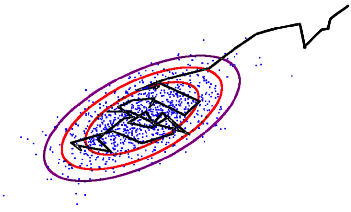
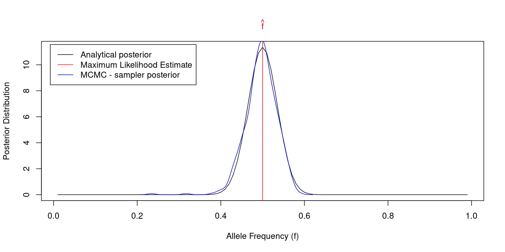

Mathematical statistics and machine learning in R
RaukR 2024 • Advanced R for Bioinformatics
20-Feb-2024
Regularizations: LASSO
\[Y = \beta_1X_1+\beta_2X_2+\epsilon\]
\[\textrm{OLS} = (Y-\beta_1X_1-\beta_2X_2)^2\]
\[\textrm{Penalized OLS} = (Y-\beta_1X_1-\beta_2X_2)^2 + \lambda(|\beta_1|+|\beta_2|)\]


Markov Chain Monte Carlo (MCMC): introduction
- Integration via Monte Carlo sampling

\[\small I = 2\int\limits_2^4{x dx}=2\frac{x^2}{2} \Big|_2^4 = 16 - 4 = 12\]
f <- function(x){return(2*x)}; a <- 2; b <- 4; N <- 10000; count <- 0
x <- seq(from = a, to = b, by = (b-a) / N); y_max <- max(f(x))
for(i in 1:N)
{
x_sample <- runif(1, a, b); y_sample <- runif(1, 0, y_max)
if(y_sample <= f(x_sample)){count <- count + 1}
}
paste0("Integral by Monte Carlo: I = ", (count / N) * (b - a) * y_max)[1] "Integral by Monte Carlo: I = 11.9248"- Markov Chain Monte Carlo (MCMC)

\[\small \rm{Hastings \,\, ratio} = \frac{\rm{Posterior}\,(\,\rm{params_{next}} \,|\, \rm{data}\,)}{\rm{Posterior}\,(\,\rm{params_{previous}} \,|\, \rm{data}\,)}\]
- If Hastings ratio > u [0, 1], then accept, else reject
- Hastings ratio does not contain the intractable integral from Bayes theorem
Markov Chain Monte Carlo (MCMC) from scratch in R
- Example from population genetics

\[\small L(n \, | \, f) = \prod_g{\left[ {2\choose g} f^g (1-f)^{2-g} \right]^{n_g}}\]
\[\small \frac{\partial \log\left[L(n | f)\right]}{\partial f} = 0 \, \Rightarrow \hat{f}=\frac{n_1+2n_2}{2(n_0+n_1+n_2)}\]
\[\small \rm{Prior}(f, \alpha, \beta) = \frac{1}{B(\alpha, \beta)} f^{\alpha-1} (1-f)^{\beta-1}\]
N <- 100; n <- c(25, 50, 25) # Observed genotype data for N individuals
f_MLE <- (n[2] + 2*n[3]) / (2 * sum(n)) # MLE of allele frequency
# Define log-likelihood function (log-binomial distribution)
LL <- function(n, f){return((n[2] + 2*n[3])*log(f) + (n[2] + 2*n[1])*log(1-f))}
# Define log-prior function (log-beta distribution)
LP <- function(f, alpha, beta){return(dbeta(f, alpha, beta, log = TRUE))}
# Run MCMC Metropolis - Hastings sampler
f_poster <- vector(); alpha <- 0.5; beta <- 0.5; f_cur <- 0.1 # initialization
for(i in 1:1000)
{
f_next <- abs(rnorm(1, f_cur, 0.1)) # make random step for allele frequency
LL_cur <- LL(n, f_cur); LL_next <- LL(n, f_next)
LP_cur <- LP(f_cur, alpha, beta); LP_next <- LP(f_next, alpha, beta)
hastings_ratio <- LL_next + LP_next - LL_cur - LP_cur
if(hastings_ratio > log(runif(1))){f_cur <- f_next}; f_poster[i] <- f_cur
}
Statistics vs. machine learning: prediction


How does machine learning work?

Machine Learning typically involves five basic steps:
1. Split data set into train, validation and test subsets
- Fit the model on the train subset
- Validate your model on the validation subset
- Repeat train - validation split many times and tune hyperparameters
- Test the accuracy of the optimized model on the test subset.
Toy example of machine learning
train <- df[sample(1:dim(df)[1], 0.7 * dim(df)[1]), ]
test <- df[!rownames(df) %in% rownames(train), ]
df$color <- ifelse(rownames(df) %in% rownames(test),"red","blue")
plot(y ~ x, data = df, col = df$color)
legend("topleft", c("Train","Test"),fill=c("blue","red"),bty="n")
abline(lm(y ~ x, data = train), col = "blue")
From linear models to artificial neural networks (ANNs)
- ANN: a mathematical function Y = f(X) with a special architecture
- Can be non-linear depending on activation function

- Backward propagation (gradient descent) for minimizing error
- Universal Approximation Theorem

Gradient descent

\[y_i = \alpha + \beta x_i + \epsilon, \,\, i = 1 \ldots n\]
\[E(\alpha, \beta) = \frac{1}{n}\sum_{i=1}^n(y_i - \alpha - \beta x_i)^2\]
\[\hat{\alpha}, \hat{\beta} = \rm{argmin} \,\, E(\alpha, \beta)\]
\[\frac{\partial E(\alpha, \beta)}{\partial\alpha} = -\frac{2}{n}\sum_{i=1}^n(y_i - \alpha - \beta x_i)\]
\[\frac{\partial E(\alpha, \beta)}{\partial\beta} = -\frac{2}{n}\sum_{i=1}^n x_i(y_i - \alpha - \beta x_i)\]
Numeric implementation of gradient descent:
\[\alpha_{i+1} = \alpha_i - \eta \left. \frac{\partial E(\alpha, \beta)}{\partial\alpha} \right\vert_{\alpha=\alpha_i,\beta=\beta_i}\]
\[\beta_{i+1} = \beta_i - \eta \left. \frac{\partial E(\alpha, \beta)}{\partial\beta} \right\vert_{\alpha=\alpha_i,\beta=\beta_i}\]
Coding gradient descent from scratch in R
n <- 100 # sample size
x <- rnorm(n) # simulated expanatory variable
y <- 3 + 2 * x + rnorm(n) # simulated response variable
summary(lm(y ~ x))
Call:
lm(formula = y ~ x)
Residuals:
Min 1Q Median 3Q Max
-1.9073 -0.6835 -0.0875 0.5806 3.2904
Coefficients:
Estimate Std. Error t value Pr(>|t|)
(Intercept) 2.89720 0.09755 29.70 <2e-16 ***
x 1.94753 0.10688 18.22 <2e-16 ***
---
Signif. codes: 0 '***' 0.001 '**' 0.01 '*' 0.05 '.' 0.1 ' ' 1
Residual standard error: 0.9707 on 98 degrees of freedom
Multiple R-squared: 0.7721, Adjusted R-squared: 0.7698
F-statistic: 332 on 1 and 98 DF, p-value: < 2.2e-16
Let us now reconstruct the intercept and slope from gradient descent
alpha <- vector(); beta <- vector()
E <- vector(); dEdalpha <- vector(); dEdbeta <- vector()
eta <- 0.01; alpha[1] <- 1; beta[1] <- 1 # initialize alpha and beta
for(i in 1:1000)
{
E[i] <- (1/n) * sum((y - alpha[i] - beta[i] * x)^2)
dEdalpha[i] <- - sum(2 * (y - alpha[i] - beta[i] * x)) / n
dEdbeta[i] <- - sum(2 * x * (y - alpha[i] - beta[i] * x)) / n
alpha[i+1] <- alpha[i] - eta * dEdalpha[i]
beta[i+1] <- beta[i] - eta * dEdbeta[i]
}
print(paste0("alpha = ", tail(alpha, 1),", beta = ", tail(beta, 1)))[1] "alpha = 2.89719694937354, beta = 1.94752837381973"
ANN from scratch in R: problem formulation


\[y(w_1,w_2)=\phi(w_1x_1+w_2x_2)\]
\[\phi(s)=\frac{1}{1+e^{\displaystyle -s}} \,\,\rm{-}\,\rm{sigmoid}\]
\[\phi^\prime(s)=\phi(s)\left(1-\phi(s)\right)\]
Decision tree from scratch in R: problem formulation

Thank you! Questions?
_
platform x86_64-pc-linux-gnu
os linux-gnu
major 4
minor 3.2 2024 • SciLifeLab • NBIS • RaukR